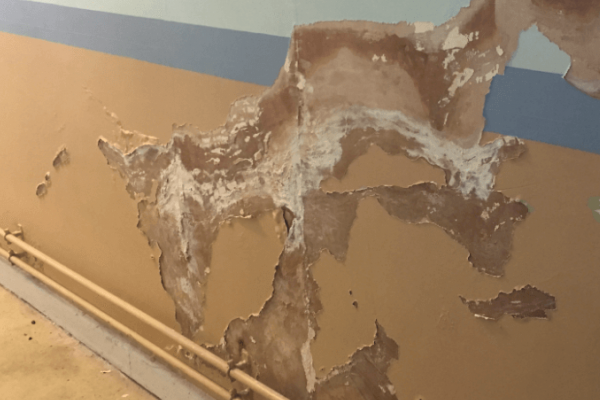
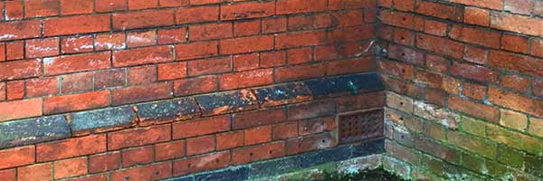
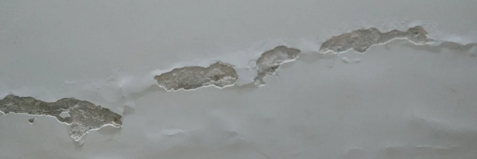
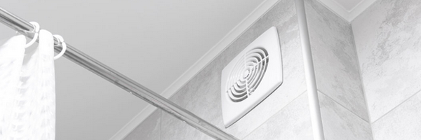
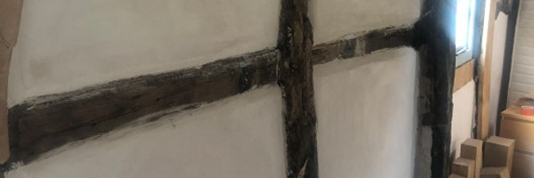
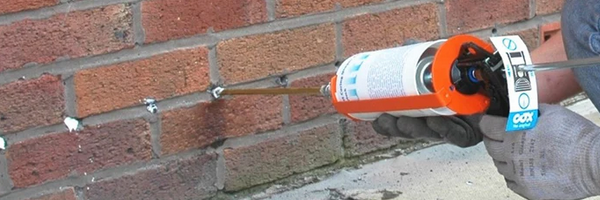

Incremental Approach to Damp
Addressing damp can be a lengthy process...
It must also be accepted that moisture meters measure electrical resistance and as a result, high meter readings do not necessarily mean high moisture content as contamination of some materials with natural salts can also give high damp meter readings.
The interpretation of the pattern of readings is therefore only indicative of the most likely cause of the high readings. Damp causation is very hard to distinguish from one visit alone and moisture meters and other methods of determining the presence of moisture in building materials cannot differentiate between dampness from one source and that from another. It is necessary to consider all potential causes of dampness before arriving at a final conclusion.
If a house remains unoccupied for a period of time, damp is likely to manifest.
Reduced ventilation, lack of heating, and minimal air movement can lead to condensation, while any existing moisture issues may worsen due to the absence of occupants managing the internal environment.
Addressing damp walls requires a step-by-step approach to identify the root cause and implement the most effective solution without unnecessary interventions. A gradual process ensures that the building has time to dry naturally and prevents excessive or costly repairs.
Step 1: Identify & Address External Sources of Moisture
- Check gutters, downpipes & roof coverings – repair leaks and ensure proper drainage
- Inspect external walls – look for cracks, defective render, or missing mortar joints that allow water ingress
- Reduce external ground levels – ensure ground levels are at least 150-200mm below internal floor level to prevent water bridging into walls
- Ensure air bricks are clear – improve subfloor ventilation to prevent moisture buildup inside the property
- Check window sills & pointing – ensure sills shed water away from walls and mortar is intact
- Inspect the damp-proof course (DPC) – verify the DPC is present, continuous, and not bridged by raised ground levels, external render, or internal plaster
Step 2: Monitor & Test for Internal Moisture
- Once external issues are addressed, allow time to see if the damp reduces naturally
- Use a moisture meter – track moisture levels over 4-8 weeks to see if they improve
- Inspect for condensation signs – look for water droplets, mould growth, or musty smells
- Check ventilation levels – ensure adequate extractor fans, trickle vents (on windows), and airflow in damp-prone rooms
Step 3: Improve Internal Ventilation & Heating
- Increase background heating – keeps surfaces warm to reduce condensation
- Use mechanical ventilation – install or upgrade extractor fans in kitchens & bathrooms
- Open windows regularly – encourages air circulation and natural drying
Step 4: Remove Harmful Modern Materials That Trap Moisture
- Remove cement render & repoint with lime mortar – allows walls time to breathe
- Replace gypsum plaster with lime plaster – traditional materials regulate moisture better in older buildings
- Avoid plastic-based paints & wallpaper – use breathable mineral or lime-based paints instead
Step 5: Consider Additional Measures if Damp Persists
- Install a French drain – helps divert water away from walls if ground moisture is an issue
- Apply breathable damp-resistant coatings – in some cases, breathable sealants can help control moisture
- Investigate hidden issues – defective damp-proof courses, plumbing leaks, or structural issues
- Install retro-fitted DPC – make sure to check which type as some have more renown than others
Step 6: Allow Time for Drying & Reassess
- Apply incrementally and monitor progress over 2-3 months – give your home some time to dry before considering major interventions
- Only replaster or repaint once walls are fully dry – this will prevent sealing in moisture
By following an incremental approach, you can identify the true cause of damp and minimise unnecessary treatments.
Addressing external moisture sources first, followed by monitoring, improving ventilation, and using breathable materials, will often resolve damp.